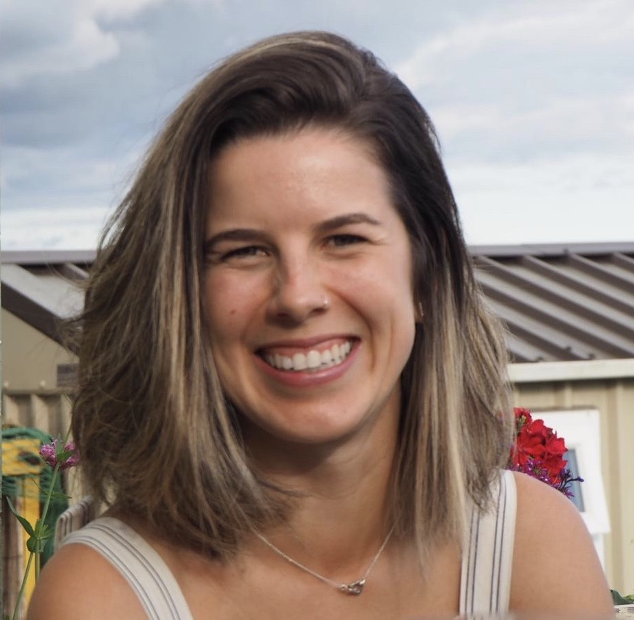

Current members:
|
David B. Lazarus Curator of Micropaleontology Download CV Download Publication List Google Scholar |
|

|
Gayane Asatryan Post-Doc Researcher Download CV Download Publication List Google Scholar |
|
Johan Renaudie Post-Doc Researcher Download CV Download Publication List Google Scholar |
|
|  |
Gabrielle Rodrigues de Faria PhD Student (in the context of the MOPGA-funded project) Download CV Download Publication List |
|
Volkan Özen PhD Student (in the context of the MOPGA-funded project) Download CV Download Publication List Google Scholar |
|
|
Sylvia Dietze Lab technician |
Past members:
| Julia Hunter | Master student (2020-2021) |
| Sarah Trubovitz | PhD student (jointly with the University of Reno, Nevada; 2016-2021) |
| Judith Giblin | Master student (2015) |
| Mandy Schmohl | Student helper (2014-2015) |
| Robert Wiese | Bachelor student (2014) |
| Ben Kotrc | Master student (jointly with Bristol, UK) |
| Markus Apel | PhD Student |
| Beatrice Bittniok | PhD Student |